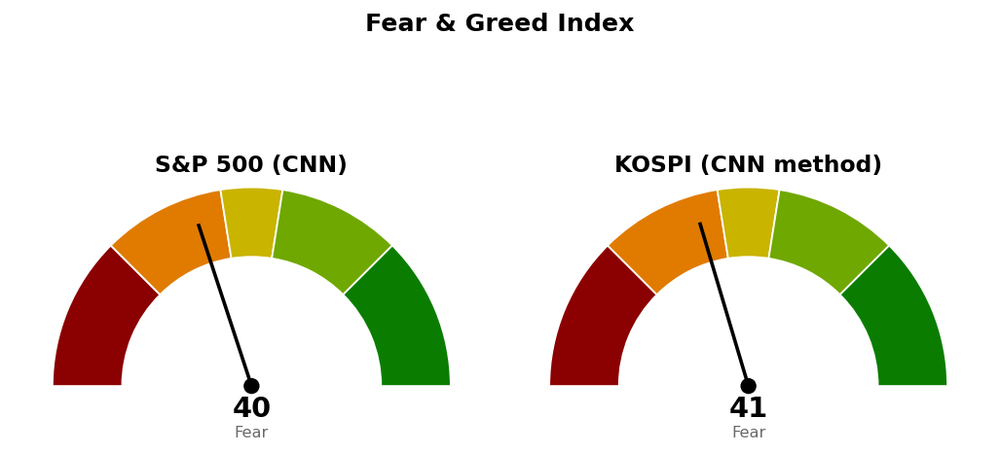

2026-11-12 장전 예측 4건: 4건 중 1건 적중(25.0%)
| 예측 | 근거 | 실제 | 판정 |
|---|---|---|---|
| S&P 500 종가 7,606 하회 | 기준선 7,649 아래 20일선 7,606 — 11/11 종가 7,619, S&P 500 선물 -0.71% 7,586, 엔비디아 CEO 교체 보도 | 종가 7,592 (-0.35%) | 적중 |
| 나스닥 종합 종가 25,131 하회 | 기준선 25,685 아래, 11/11 종가로 되찾은 피보나치 78.6% 되돌림 25,131(200일선 25,123) 재이탈 — 나스닥100 선물 -1.38% 28,080 | 종가 25,366 (-0.39%) | 빗나감 |
| 기술 (XLK), S&P 500 대비 약세 마감 | 나스닥100 선물 -1.38% 대 S&P 500 선물 -0.71%, 엔비디아 이사회의 CEO 해임 준비 보도 — 20일 초과수익 -7.15% 꼴찌 | -0.34% 대 S&P 500 -0.35% | 빗나감 |
| 헬스케어 (XLV), S&P 500 대비 강세 마감 | 20일 초과수익 1위(+9.91%), 기술 주도 약세 출발(나스닥100 선물 -1.38%), 변동성지수 18.78(+7.38%) | -0.59% 대 S&P 500 -0.35% | 빗나감 |
US 최근 90일 누적 79건 중 59건 적중(74.7%) · 최근 20건 20건 중 15건 적중(75.0%)
나스닥은 시가 25,092 · 저가 25,068로 25,131 아래에서 출발했으나 종가 25,366으로 235포인트 위에서 마감했습니다. XLK는 S&P 500보다 0.01%포인트 높게 마감했고, XLV는 시가 190.17달러에서 종가 187.83달러로 밀렸습니다.
직전 시황은 11/12 미국 장전 회차이며, 가격은 11/11 미국 마감 후 회차가 등록한 값입니다. 기술주가 지수보다 약하고 헬스케어가 강하다고 본 장전 판단은 틀렸습니다.
| 직전 가격 | 판정 방식 | 11/12 결과 | 판정 |
|---|---|---|---|
| 나스닥 기준선 25,685 | 일봉 종가 상회 | 고가 25,597 · 종가 25,366 | 미충족 |
| 나스닥 다음 지지 24,500 | 일봉 종가 하회 | 저가 25,068 | 미충족 |
| 나스닥 취소선 24,262 | 일봉 종가 하회 | 종가 25,366 | 미충족 · 사다리 유지 |
| S&P 500 기준선 7,649 | 일봉 종가 상회 | 고가 7,653 · 종가 7,592 | 미충족 · 장중 상회 후 되밀림 |
| S&P 500 다음 지지 7,470 | 일봉 종가 하회 | 저가 7,551 | 미충족 |
| S&P 500 사다리 7,314 · 7,113 | 장중 저가 도달 | 저가 7,551 | 미도달 · 미집행 |
| SPY 손절 746 · 목표 777달러 | 장중 도달 | 종가 757.12달러 | 둘 다 미도달 · 보유 유지 |
| QQQ 손절 640 · 목표 702달러 | 장중 도달 | 종가 688.17달러 | 둘 다 미도달 · 보유 유지 |
| XLV 190 · XLY 122달러 | 일봉 종가 상회 | 187.83 · 120.46달러 | 미충족 · 진입 없음 |
어느 갈래도 충족되지 않아 기준선 · 도착지 · 다음 지지 · 사다리 · 취소선을 전부 직전 값 그대로 둡니다. 직전 계획을 그대로 유지합니다. S&P 500은 장중 7,653으로 기준선을 넘었다가 종가 7,592로 20일선 7,605와 9번 반응한 가격 7,599 아래에서 마감했습니다.
20일선·50일선은 지수이동평균, 200일선은 단순이동평균입니다. 경로를 말할 근거가 없어 방향을 말하지 않고 기준선과 두 갈래만 냅니다. 사다리는 지수 포인트로만 적습니다.
기준선은 한 세션 안에 닿는 거리입니다. 11/12 장중 저가 25,068은 피보나치 78.6% 되돌림 25,131과 200일선 25,130 아래였지만 종가로 둘 다 지켰습니다. 사다리는 남은 회차가 없고 두 회차 평가손익은 계좌 +0.10%입니다. 180일 박스(21,425~27,401) 안쪽 판정은 중립(지지 테스트 거래량 혼조, 저점 절하, 상승봉 대 하락봉 거래량비 1.03)입니다.
기준선까지는 한 세션 안에 닿는 거리입니다. 기준선 아래 첫 받침은 7,530(7번 반응한 가격 · 피보나치 50% 되돌림 7,541)이고 11/12 저가 7,551이 그 위에서 멈췄습니다. 180일 박스(6,475~7,828) 안쪽 판정은 중립(지지 테스트 거래량 혼조, 저점 절하, 거래량비 1.00)입니다. 현재가는 지수 매수 자리가 아니며, 사다리 1차 7,314까지 기다립니다.
S&P 500 7,592가 200일 이동평균 7,337 위(+3.48%, 4/8부터)라 새 계획을 낼 수 있는 국면입니다.
| ETF | 등록일 | 현재 | 진입 | 손절 | 목표 | 상태 |
|---|---|---|---|---|---|---|
| Invesco QQQ (QQQ) | 2026-11-06 | 688 | 663 | 640 | 702 | 보유 중 (진입 2026-11-09) |
| SPDR S&P 500 (SPY) | 2026-11-11 | 757 | 759 | 746 | 777 | 보유 중 (진입 2026-11-11) |
| 에너지 (XLE) | 2026-10-20 | 64.33 | 70.80 | 68.87 | 74.54 | 진입 대기 |
| 필수소비재 (XLP) | 2026-10-23 | 91.06 | 94.21 | 92.40 | 99.40 | 진입 대기 |
| 헬스케어 (XLV) | 2026-11-12 | 188 | 190 | 182 | 207 | 진입 대기 → 패스로 종료 |
| 임의소비재 (XLY) | 2026-11-12 | 120 | 122 | 119 | 126 | 진입 대기 → 아래 계획으로 다시 등록 |
새 계획은 XLY 하나이며 가격은 직전과 같습니다.
모멘텀형(저항을 돌파하면 그 방향이 이어진다는 전제)이지만 진입~목표가 하루 평균 변동폭의 1.80배라 트레일링 없이 126달러 단일 청산으로 끝냅니다(2배 기준은 관행이며 정설이 아닙니다). 눌림 매수 1:1.70은 구조가 확인되기 전에 사는 자리라 돌파 매수를 대표로 씁니다. 계좌 1% 위험 기준 비중 37.7%를 13% 상한으로 제한하며 119달러 손절 시 계좌 -0.35%입니다. 하루 평균 변동폭은 가격의 1.89%, 손절 폭은 진입가의 2.66%입니다.
상위 2개는 임의소비재 · 헬스케어로 직전과 같고 순서만 바뀌었습니다. 1위와 꼴찌의 차이는 17.06%포인트에서 14.36%포인트로 줄었고, 5일 초과수익은 기술 +3.77% · 에너지 +1.14% · 산업재 +1.04%만 플러스입니다. 11/12 하루는 에너지 +1.51%가 가장 강했습니다.
종목 발굴: 200개를 훑어 1차 20개, 구조 판정 12개 중 3개가 남았습니다(거래대금 미달 95개, 추세 미달 51개, 52주 고점 대비 위치 벗어남 13개, 지수 대비 상대강도 미달 13개, 이미 보고 있는 종목 8개, 박스 판정 불가 3개, 추격 비권장 1개 탈락). 1순위 맥케슨 (MCK)은 이 브리핑 뒤에 배치가 정식 리포트를 씁니다. 이베이 (EBAY)와 로스스토어스 (ROST)는 후보이며 리포트가 아닙니다 — 텔레그램으로 종목명을 보내면 리포트가 나갑니다.
| 항목 | 값 | 직전 대비 |
|---|---|---|
| 미국 경기선행지수 | 101.00 (9월) | 전월 대비 +0.05 · 직전 회차와 같은 값 |
| 한국 경기선행지수 | 102.53 (9월) | 전월 대비 -0.13 · 직전 회차와 같은 값 |
| 미 10년 명목금리 | 확정 4.98% (11/10) · 지수 시세 5.103% (11/12) | 확정 +0.10%포인트 · 시세 +0.105%포인트 |
| 미 10년 기대물가 | 2.24% (11/12) | +0.04%포인트 (11/10 대비) |
| 미 10년 실질금리 | 2.78% (11/10) | +0.12%포인트 |
| 유가 (WTI) | 확정 99.64달러 (11/3) · 선물 88.74달러 (11/12) | 확정 갱신 없음 · 선물 +2.55% |
| 달러지수 (광의) | 121.88 (11/6) | 갱신 없음 |
| 변동성지수 (VIX) | 18.70 (11/12, 장중 17.38~19.34) | 전일 17.49 · +6.92% |
경기선행지수는 장기 평균을 100으로 놓고 경기 방향을 몇 달 앞서 보여주는 OECD 지표이며, 새 발표가 없어 해석을 바꾸지 않습니다. 11/10 명목금리 상승 +0.10%포인트는 같은 날 실질금리 +0.12%포인트로 설명되고 기대물가는 2.22%에서 2.20%로 내렸습니다. 10년 시세는 11/12 5.103%로 5%를 넘었습니다. 이 절은 지수 기준선에 반영하지 않습니다.

S&P 500은 CNN 공식값이며 1주 전 20.0, 1개월 전 45.2였습니다. 가장 낮은 항목은 모멘텀 16.0, 풋/콜 비율 26.2, 안전자산 선호 29.2이고 가장 높은 항목은 정크본드 수요 58.0, 주가 폭 51.2입니다. 코스피는 CNN 방식을 한국 데이터로 재구성한 값이며 공식 지수가 아닙니다. 일곱 항목을 모두 썼고 기준일은 11/12이며, 가장 낮은 항목은 모멘텀 6.2, 주가 폭 17.0이고 가장 높은 항목은 풋/콜 비율 69.0입니다.
| 날짜 (미국) | 이벤트 | 확인할 것 |
|---|---|---|
| 11/13 | 다음 세션 | S&P 500 7,470 · 7,649, 나스닥 24,500 · 25,685 대비 종가 · XLY 122달러 종가 · 10년 시세 5.1% 부근 |
경제지표 일정 조회가 앞으로 5일 안의 발표를 하나도 돌려주지 않아 날짜가 확정된 발표를 적지 못했습니다.
1. 매수 쪽 — 지수는 지금 가격에 살 자리가 없습니다. 나스닥은 남은 회차가 없고, S&P 500은 장중 저가로 7,314에 닿으면 계좌의 2%, 7,113에 닿으면 계좌의 2%를 매수합니다. 2. 나스닥은 일봉 종가 24,262 아래면 매수 계획 종료이고, 1차(25,131) · 2차(24,425)를 다음 세션에 전량 매도 (사다리 취소)합니다. 3. S&P 500은 일봉 종가 7,100 아래면 매수 계획 종료이고, 산 회차를 다음 세션에 전량 매도 (사다리 취소)합니다. 4. SPY 진입 중 — 746달러 장중 도달 시 전량 매도 (손절), 777달러에서 전량 매도 (목표 도달). 5. QQQ 진입 중 — 640달러 장중 도달 시 전량 매도 (손절), 702달러에서 전량 매도 (목표 도달). 6. XLY 진입 대기 — 일봉 종가 122달러 상회 시 계좌의 13% 이내로 진입, 119달러 장중 도달 시 전량 매도 (손절), 126달러에서 전량 매도 (목표 도달). 7. XLV — 190달러 계획 종료, 매수하지 않습니다. 8. XLP 진입 대기 — 94.21달러 / 92.40달러 / 99.40달러. XLE 진입 대기 — 70.80달러 / 68.87달러 / 74.54달러. 9. S&P 500이 일봉 종가로 200일선 7,337 아래면 위 ETF 계획의 신규 진입을 보류합니다. S&P 500 사다리에는 적용하지 않습니다.
다음 세션에 볼 것 — S&P 500이 일봉 종가로 20일선 7,605를 되찾는지입니다.
ATR(하루 평균 변동폭): 최근 14일 하루 가격 변동폭의 평균.
지수이동평균: 최근 가격에 더 무게를 둔 평균.
단순이동평균: 일정 기간 종가를 같은 무게로 더해 나눈 평균.
상대강도지수(RSI): 최근 14일 상승폭과 하락폭의 비율로 과열·침체를 보는 0~100 지표.
트레일링: 가격이 오르는 만큼 손절선을 따라 올리는 청산 방식.
VIX: S&P 500 옵션 가격에서 뽑은 향후 30일 예상 변동성.